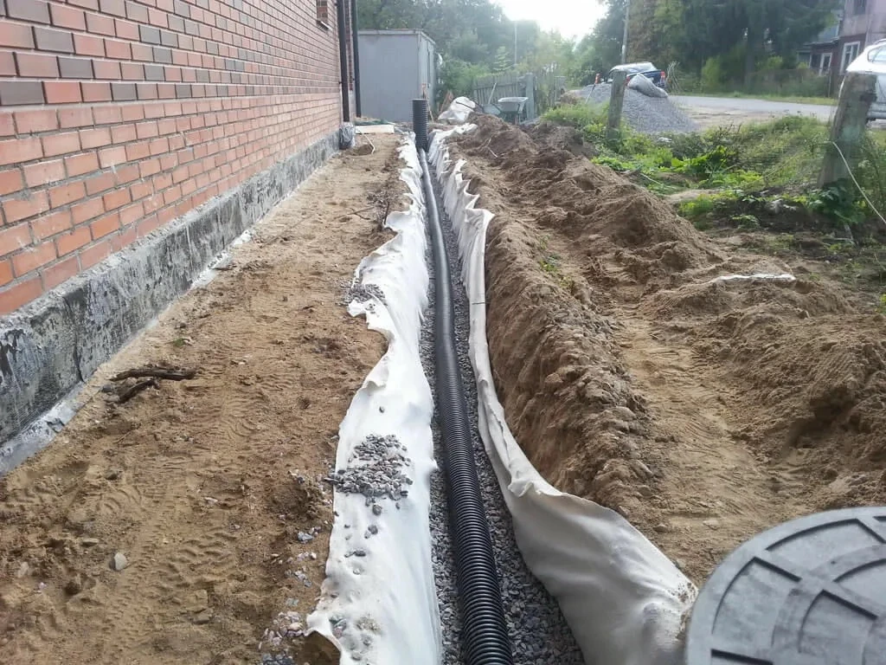
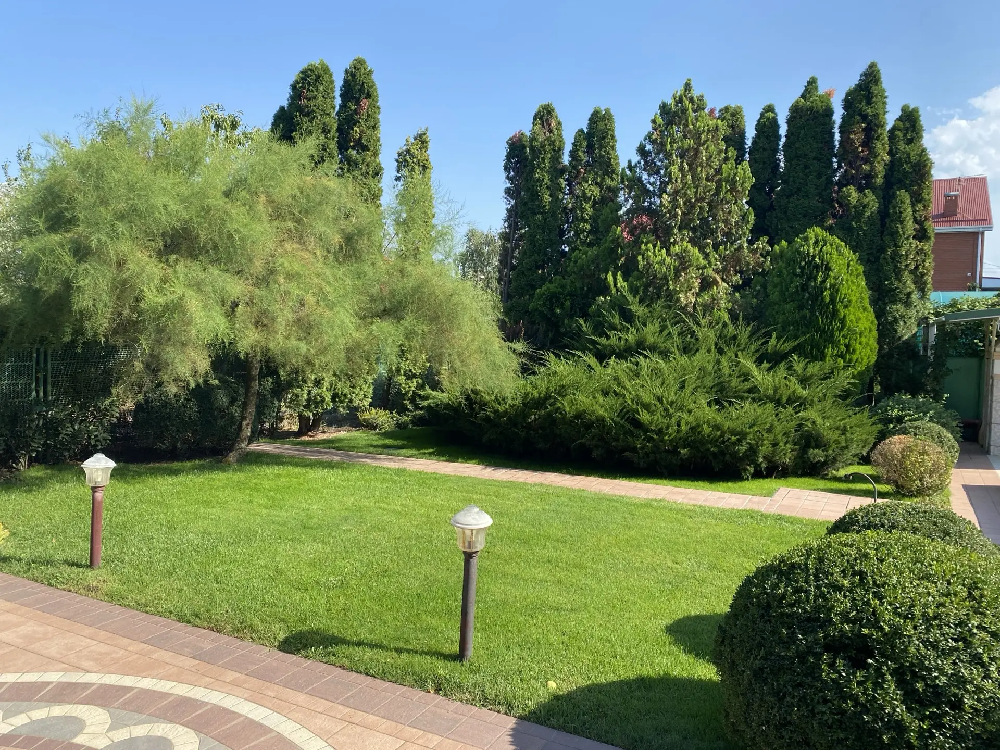
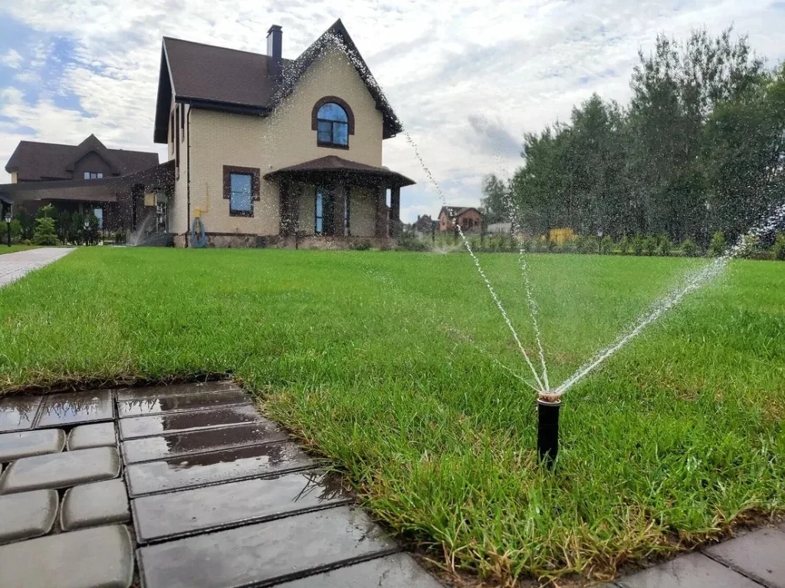

Дренажная система (отвод воды с участка)
Отводим поверхностные и грунтовые воды от фундамента, отмостки и дорожек: точечные дождеприёмники, линейные лотки, дренажные трубы в геотекстиле со щебнем и сборные колодцы.
Инженерное и ландшафтное обустройство в едином цикле с мощением: дренажная система, ландшафтный свет, автоматический полив, укладка газона и подготовка основания.
Инженерные коммуникации и озеленение практичнее всего делать одновременно с мощением дорожек и двора. Подземные сети — дренажные трубы, гильзы под кабели ландшафтного света и магистрали автополива — закладываются до укладки плитки или заливки бетона. Это исключает вскрытие свежего покрытия в будущем. Мы выводим бордюры, водоотводные лотки и уровень рулонного газона в единую нулевую отметку без перепадов высот и застоя воды.
Каждую систему проектируем и монтируем с учётом рельефа, типа грунта и планировки вашего участка.
Отводим поверхностные и грунтовые воды от фундамента, отмостки и дорожек: точечные дождеприёмники, линейные лотки, дренажные трубы в геотекстиле со щебнем и сборные колодцы.
Проектируем безопасные низковольтные линии 12–24 В, скрытую прокладку кабелей в защитных рукавах, навигационную подсветку дорожек, подсветку ступеней и декоративный акцентный свет на сад.
Монтируем долговечные системы на оборудовании Hunter и Rain Bird: скрытые выдвижные дождеватели для газона, капельные линии для цветников и хвойных, насос и контроллер с датчиком дождя.
Очищаем территорию от сорняков, выравниваем по лазерному нивелиру, культивируем плодородный грунт, укатываем основание, стелем свежий рулонный газон и проводим первый глубокий пролив.
Каждую работу можно заказать отдельно или объединить в комплексное благоустройство «под ключ».
Надёжная защита фундамента, двора и посадок от застоя дождевых и талых вод.Монтируем точечные дождеприёмники под водостоками и линейные лотки вдоль мощения. Укладываем перфорированные дренажные трубы в щебёночной обсыпке и плотном геотекстиле с отводом в поглощающий или накопительный колодец. Ваш двор останется сухим даже после затяжных ливней, а плитка не просядет.

Безопасное вечернее перемещение и сказочная атмосфера загородного дома.Прокладываем защищённые подземные кабельные линии в бронерукавах до финишного мощения. Используем безопасное напряжение 12–24 В — нет риска удара током. Создаём сценарии освещения: мягкая подсветка дорожек и лестниц, свет в зоне отдыха и акцентные лучи на кроны деревьев.

Пышный газон и свежие растения без ежедневной рутины со шлангом.Проектируем автополив на оборудовании лидеров отрасли (Hunter, Rain Bird) с делением на независимые зоны. Выдвижные спринклеры скрыты в грунте и не мешают газонокосилке, а для туй и цветников монтируем капельные контуры. Датчик дождя автоматически блокирует полив в сырую погоду.

Идеально ровный и плотный изумрудный ковёр без сорняков и проплешин.Срезаем старый дёрн, культивируем почву, завозим и распределяем плодородный грунт, выравниваем по лазерному нивелиру и прикатываем катком. Стелим свежий мятликовый газон в шахматном порядке, плотно подгоняем стыки, укатываем и обильно проливаем для 100% приживаемости.

Одинаковых участков не бывает, поэтому рассчитываем смету после осмотра и инженерных замеров.
Перепады высот, тип грунта, естественный уклон участка и уровень грунтовых вод определяют объём земляных работ и глубину траншей.
Можно заказать только водоотведение и газон или полный комплекс с автополивом и ландшафтным освещением.
На расчёт влияют метраж траншей, количество зон полива, число дождеприёмников, дренажных колодцев и светильников.
Подбираем насосные станции, контроллеры, светильники, газон и дренажные материалы под ваши задачи и бюджет.
Бесплатный выезд инженера и понятная смета. Приедем на участок, выполним замеры, оценим грунт и предложим оптимальную схему сетей. Зафиксируем стоимость в смете и договоре без скрытых доплат.
Получить расчётСоседние работы можно обсудить вместе с основной задачей.